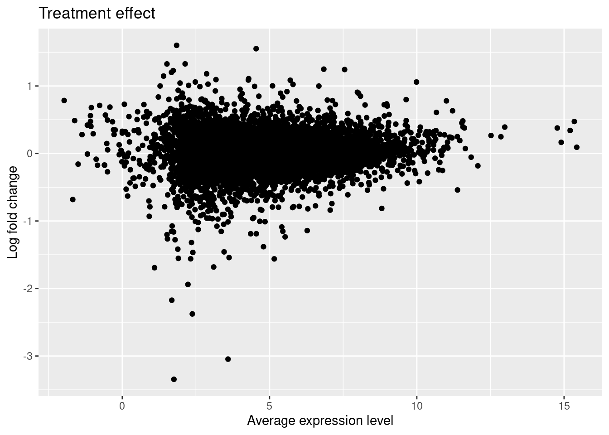

DE_analysis
Anthony Hung
2019-12-16
Last updated: 2020-03-02
Checks: 6 1
Knit directory: OAStrain/
This reproducible R Markdown analysis was created with workflowr (version 1.5.0). The Checks tab describes the reproducibility checks that were applied when the results were created. The Past versions tab lists the development history.
The R Markdown file has unstaged changes. To know which version of the R Markdown file created these results, you’ll want to first commit it to the Git repo. If you’re still working on the analysis, you can ignore this warning. When you’re finished, you can run wflow_publish to commit the R Markdown file and build the HTML.
Great job! The global environment was empty. Objects defined in the global environment can affect the analysis in your R Markdown file in unknown ways. For reproduciblity it’s best to always run the code in an empty environment.
The command set.seed(20191127) was run prior to running the code in the R Markdown file. Setting a seed ensures that any results that rely on randomness, e.g. subsampling or permutations, are reproducible.
Great job! Recording the operating system, R version, and package versions is critical for reproducibility.
Nice! There were no cached chunks for this analysis, so you can be confident that you successfully produced the results during this run.
Great job! Using relative paths to the files within your workflowr project makes it easier to run your code on other machines.
Great! You are using Git for version control. Tracking code development and connecting the code version to the results is critical for reproducibility. The version displayed above was the version of the Git repository at the time these results were generated.
Note that you need to be careful to ensure that all relevant files for the analysis have been committed to Git prior to generating the results (you can use wflow_publish or wflow_git_commit). workflowr only checks the R Markdown file, but you know if there are other scripts or data files that it depends on. Below is the status of the Git repository when the results were generated:
Ignored files:
Ignored: .RData
Ignored: .Rhistory
Ignored: .Rproj.user/
Ignored: analysis/figure/
Ignored: data/ANT1_2.rds
Ignored: data/Combined_singlecell_data.rds
Ignored: data/Combined_singlecell_data_allGenes.rds
Ignored: data/Combined_singlecell_data_allGenes_normalized.rds
Ignored: data/Combined_singlecell_data_first.rds
Ignored: data/GoMresults.rds
Ignored: data/GoMresultsk3.rds
Ignored: data/GoMresultsk4.rds
Ignored: data/GoMresultsk5.rds
Ignored: data/GoMresultsk6.rds
Ignored: data/GoMresultsk7.rds
Ignored: data/GoMresultsk8.rds
Ignored: data/HumanLiverSeurat.rds
Ignored: data/RUVsCPM.rds
Ignored: data/RUVsOut.rds
Ignored: data/filtered_counts.rds
Ignored: data/humanLiverSubset_hepatocytes.rds
Ignored: data/norm_filtered_counts.rds
Ignored: data/raw_counts_relabeled.rds
Ignored: output/ANT1.2.rds
Unstaged changes:
Modified: analysis/Bulk_cellComposition_analysis.Rmd
Modified: analysis/DE_analysis.Rmd
Modified: analysis/Pilot_GoMAnalysis.Rmd
Modified: fig-limma-treatment-hit-1.eps
Note that any generated files, e.g. HTML, png, CSS, etc., are not included in this status report because it is ok for generated content to have uncommitted changes.
These are the previous versions of the R Markdown and HTML files. If you’ve configured a remote Git repository (see ?wflow_git_remote), click on the hyperlinks in the table below to view them.
| File | Version | Author | Date | Message |
|---|---|---|---|---|
| html | 88682cc | Anthony Hung | 2020-02-19 | add additional chondro markers |
| Rmd | b967c3c | Anthony Hung | 2020-01-27 | Add cell atlas assignment |
| html | b967c3c | Anthony Hung | 2020-01-27 | Add cell atlas assignment |
| Rmd | 797305a | Anthony Hung | 2020-01-19 | include Individual as a FE |
| html | 797305a | Anthony Hung | 2020-01-19 | include Individual as a FE |
| html | a356514 | Anthony Hung | 2020-01-18 | knit analysis files |
| Rmd | 3c163de | Anthony Hung | 2020-01-18 | reorder by pvalue |
| Rmd | cb6a0a5 | Anthony Hung | 2020-01-18 | edgeR DE analysis |
| html | cb6a0a5 | Anthony Hung | 2020-01-18 | edgeR DE analysis |
| Rmd | 158fdf3 | Anthony Hung | 2020-01-16 | Use quant_normalization |
| html | 158fdf3 | Anthony Hung | 2020-01-16 | Use quant_normalization |
| Rmd | 4e7c93c | Anthony Hung | 2020-01-13 | Remove 18856 strain |
| html | 4e7c93c | Anthony Hung | 2020-01-13 | Remove 18856 strain |
| Rmd | 00a66fb | Anthony Hung | 2020-01-13 | run GO enrichment analysis |
| html | 00a66fb | Anthony Hung | 2020-01-13 | run GO enrichment analysis |
| Rmd | a04a1ac | Anthony Hung | 2020-01-13 | Add GO analysis |
| html | a04a1ac | Anthony Hung | 2020-01-13 | Add GO analysis |
| Rmd | 03b499e | Anthony Hung | 2020-01-13 | Add counts of significant DE Genes |
| html | 03b499e | Anthony Hung | 2020-01-13 | Add counts of significant DE Genes |
| html | 5eb29e8 | Anthony Hung | 2020-01-13 | Knit analysis files |
| html | f1425df | Anthony Hung | 2020-01-13 | Correct CPM Cutoff strategy |
| html | bd0e9ca | Anthony Hung | 2020-01-11 | Re-run analyses with real data |
| Rmd | 63f5760 | Anthony Hung | 2020-01-09 | Knit analysis files |
| html | 63f5760 | Anthony Hung | 2020-01-09 | Knit analysis files |
| Rmd | 5c249f2 | Anthony Hung | 2020-01-07 | Add functions to plot Limma results |
| html | 5c249f2 | Anthony Hung | 2020-01-07 | Add functions to plot Limma results |
| Rmd | ea5b72e | Anthony Hung | 2020-01-06 | Revise limma commands |
| html | ea5b72e | Anthony Hung | 2020-01-06 | Revise limma commands |
| Rmd | d80f643 | Anthony Hung | 2020-01-06 | Run Limma: |
| Rmd | b7948f0 | Anthony Hung | 2020-01-06 | DE analysis design matrix |
| Rmd | 9301706 | Anthony Hung | 2019-12-17 | build analysis files |
| Rmd | bb98d14 | Anthony Hung | 2019-12-16 | Add sampleinfo file |
| Rmd | c1f7cf7 | Anthony Hung | 2019-12-16 | Start up additional analysis files |
Introduction
library("limma")
library("plyr")
library("edgeR")
library("dplyr")
library("tidyr")
library("ashr")
library("ggplot2")
library("cowplot")
library("VennDiagram")
library("RUVSeq")
library("topGO")
#load in filtered count data, RUVs output
filt_counts <- readRDS("data/filtered_counts.rds")
filt_counts <- filt_counts$counts
RUVsOut <- readRDS("data/RUVsOut.rds")
# load gene annotations
gene_anno <- read.delim("data/gene-annotation.txt",
sep = "\t")
# load in reordered sample information
sampleinfo <- readRDS("data/Sample.info.RNAseq.reordered.csv")Limma doesn’t deal with technical replicates, so here I randomly sample 1 replicate for each of the 6 individualxcondition
#randomly sample 1 replicate from each set of 3 replicates
individuals <- c("18855", "18856", "19160")
treatments <- c("S", "U")
set.seed(1234)
selected_samples <- c()
for(i in c("18856", "18855")){
for(t in treatments){
sample_num <- base::sample(c(1:3), 1)
selected_samples <- c(selected_samples, paste0(i, sep = "_", sample_num, sep = "_", t))
}
}
sample_num <- base::sample(c(2:3), 1)
selected_samples <- c(selected_samples, paste0("19160", sep = "_", sample_num, sep = "_", "U"))
sample_num <- base::sample(c(1:3), 1)
selected_samples <- c(selected_samples, paste0("19160", sep = "_", sample_num, sep = "_", "S"))
selected_samples[1] "18856_1_S" "18856_2_U" "18855_2_S" "18855_2_U" "19160_3_U" "19160_2_S"randomly_sampled_indices <- match(selected_samples, colnames(filt_counts))
single_filt_counts <- filt_counts[,randomly_sampled_indices]
anno <- pData(RUVsOut)[randomly_sampled_indices,]single_filt_counts <- filt_counts
anno <- pData(RUVsOut)
x <- paste0(anno$Individual, anno$treatment)
anno$LibraryPrepBatch <- factor(anno$LibraryPrepBatch, levels = c("1", "2"))
anno$Replicate <- factor(anno$Replicate, levels = c("1", "2", "3"))
design <- model.matrix(~treatment + Individual + W_1 + W_2 + RIN,
data = anno)
colnames(design) <- gsub("treatment", "", colnames(design))
colnames(design)[1] "(Intercept)" "Unstrain" "IndividualNA18856 "
[4] "IndividualNA19160 " "W_1" "W_2"
[7] "RIN" # Model individual as a random effect (use duplicate correlation function); treatment as a fixed effect, covariates = RUV factors
# Because of issues with duplicateCorrelation with the number of covariates I include in the design matrix, I elect intead to include all samples (all technical replicates) and use duplicateCorrelation for technical replicates and instead include Individual as a fixed effect in the linear model
# Recommended to run both voom and duplicateCorrelation twice.
# https://support.bioconductor.org/p/59700/#67620
#TMM Normalization
y <- DGEList(single_filt_counts)
y <- calcNormFactors(y, method = "TMM")
#Voom for differential expression
v1 <- voom(y, design)
corfit1 <- duplicateCorrelation(v1, design, block = x)Warning in glmgam.fit(dx, dy, coef.start = start, tol = tol, maxit = maxit, :
Too much damping - convergence tolerance not achievable
Warning in glmgam.fit(dx, dy, coef.start = start, tol = tol, maxit = maxit, :
Too much damping - convergence tolerance not achievablecorfit1$consensus.correlation[1] 0.354764v2 <- voom(y, design, block = x, correlation = corfit1$consensus.correlation)
corfit2 <- duplicateCorrelation(v2, design, block = x)
corfit2$consensus.correlation[1] 0.3549247fit <- lmFit(v2, design, block = x,
correlation = corfit2$consensus.correlation)
fit <- eBayes(fit)Assess model results
get_results <- function(x, number = nrow(x$coefficients), sort.by = "none",
...) {
# x - object MArrayLM from eBayes output
# ... - additional arguments passed to topTable
stopifnot(class(x) == "MArrayLM")
results <- topTable(x, number = number, sort.by = sort.by, ...)
return(results)
}
top_treatment <- get_results(fit, coef = "Unstrain", sort.by = "B")
head(top_treatment) logFC AveExpr t P.Value adj.P.Val
ENSG00000102317 0.9646069 6.618528 9.788653 1.959478e-08 0.0002047067
ENSG00000104368 -3.0887783 3.753098 -7.935283 3.851911e-07 0.0020120458
ENSG00000100292 -1.1068651 5.399316 -7.090906 1.727530e-06 0.0058401006
ENSG00000080824 -0.5373642 8.888436 -6.533334 4.905709e-06 0.0058401006
ENSG00000133142 0.5627867 7.056389 6.522848 5.004984e-06 0.0058401006
ENSG00000181019 -0.7843440 5.824401 -6.517648 5.054991e-06 0.0058401006
B
ENSG00000102317 9.570798
ENSG00000104368 6.229870
ENSG00000100292 5.330764
ENSG00000080824 4.350280
ENSG00000133142 4.328594
ENSG00000181019 4.322443results_treatment <- get_results(fit, coef = "Unstrain",
number = nrow(filt_counts), sort = "none")
ma_treatment <- ggplot(data.frame(Amean = fit$Amean, logFC = fit$coef[, "Unstrain"]),
aes(x = Amean, y = logFC)) +
geom_point() +
labs(x = "Average expression level", y = "Log fold change",
title = "Treatment effect")
ma_treatment
| Version | Author | Date |
|---|---|---|
| 797305a | Anthony Hung | 2020-01-19 |
| cb6a0a5 | Anthony Hung | 2020-01-18 |
| 158fdf3 | Anthony Hung | 2020-01-16 |
| 00a66fb | Anthony Hung | 2020-01-13 |
| a04a1ac | Anthony Hung | 2020-01-13 |
| 03b499e | Anthony Hung | 2020-01-13 |
| 5eb29e8 | Anthony Hung | 2020-01-13 |
| f1425df | Anthony Hung | 2020-01-13 |
| bd0e9ca | Anthony Hung | 2020-01-11 |
| ea5b72e | Anthony Hung | 2020-01-06 |
hist_treatment <- ggplot(results_treatment, aes(x = P.Value)) +
geom_histogram(binwidth = 0.01) +
labs(x = "p-value", y = "Number of genes", title = "Treatment effect")
hist_treatment
| Version | Author | Date |
|---|---|---|
| 797305a | Anthony Hung | 2020-01-19 |
| cb6a0a5 | Anthony Hung | 2020-01-18 |
| 158fdf3 | Anthony Hung | 2020-01-16 |
| 00a66fb | Anthony Hung | 2020-01-13 |
| a04a1ac | Anthony Hung | 2020-01-13 |
| 03b499e | Anthony Hung | 2020-01-13 |
| 5eb29e8 | Anthony Hung | 2020-01-13 |
| f1425df | Anthony Hung | 2020-01-13 |
| bd0e9ca | Anthony Hung | 2020-01-11 |
| ea5b72e | Anthony Hung | 2020-01-06 |
Explore top hits
Boxplot function.
plot_gene <- function(v, g) {
# v - An EList object containing log2 counts per million
# g - character vector of a single gene
stopifnot(class(v) == "EList",
is.character(g), length(g) == 1)
library("tidyr")
single_gene <- v$E[g, ]
single_gene_long <- as.data.frame(single_gene)
colnames(single_gene_long) <- "log2cpm"
single_gene_long$sample <- rownames(single_gene_long)
single_gene_long <- separate(single_gene_long, col = "sample", sep = "_",
into = c("Individual", "Replicate", "Treatment"))
single_gene_long$Treatment <- factor(single_gene_long$Treatment, levels = c("S", "U"))
single_gene_long$Treatment <- revalue(single_gene_long$Treatment, c("S"="Strain", "U"="No Strain"))
ggplot(single_gene_long, aes(x = Treatment, y = log2cpm, fill = Treatment)) +
geom_boxplot() +
labs(title = g, x = "Treatment", y = expression("Expression level (" * log[2] * " cpm)"))
}Treatment
#rename top_treatment genes to gene symbols for easier interpretation
top_treatment_top4 <- gene_anno$external_gene_name[match(head(rownames(top_treatment), n=4), gene_anno$ensembl_gene_id)]
top_treatment_top4[1] RBM3 PLAT HMOX1 HSP90AA1
56858 Levels: A1BG A1BG-AS1 A1CF A2M A2M-AS1 A2ML1 A2ML1-AS1 A2ML1-AS2 ... ZZEF1p_treatment_1 <- plot_gene(v2, rownames(top_treatment)[1])
p_treatment_2 <- plot_gene(v2, rownames(top_treatment)[2])
p_treatment_3 <- plot_gene(v2, rownames(top_treatment)[3])
p_treatment_4 <- plot_gene(v2, rownames(top_treatment)[4])
ggsave("fig-limma-treatment-hit-1.eps", plot = p_treatment_1,
width = 7, height = 7, units = "in")
plot_grid(p_treatment_1, p_treatment_2, p_treatment_3, p_treatment_4)
| Version | Author | Date |
|---|---|---|
| 797305a | Anthony Hung | 2020-01-19 |
| cb6a0a5 | Anthony Hung | 2020-01-18 |
| 158fdf3 | Anthony Hung | 2020-01-16 |
| 00a66fb | Anthony Hung | 2020-01-13 |
| a04a1ac | Anthony Hung | 2020-01-13 |
| 03b499e | Anthony Hung | 2020-01-13 |
| 5eb29e8 | Anthony Hung | 2020-01-13 |
| f1425df | Anthony Hung | 2020-01-13 |
| bd0e9ca | Anthony Hung | 2020-01-11 |
| 5c249f2 | Anthony Hung | 2020-01-07 |
Use ash for mutliple testing correction
Treatment effect.
run_ash <- function(x, coef) {
# Perform multiple testing correction with adaptive shrinkage (ASH)
#
# x - object MArrayLM from eBayes output
# coef - coefficient tested by eBayes
stopifnot(class(x) == "MArrayLM", coef %in% colnames(x$coefficients))
result <- ash(betahat = x$coefficients[, coef],
sebetahat = x$stdev.unscaled[, coef] * sqrt(x$s2.post),
df = x$df.total[1])
return(result)
}
ash_treatment <- run_ash(fit, "Unstrain")
class(ash_treatment)[1] "ash"names(ash_treatment)[1] "fitted_g" "loglik" "logLR" "data" "result" "call" sum(ash_treatment$result$svalue < .05)[1] 784hist(ash_treatment$result$svalue)
| Version | Author | Date |
|---|---|---|
| 797305a | Anthony Hung | 2020-01-19 |
| cb6a0a5 | Anthony Hung | 2020-01-18 |
| 158fdf3 | Anthony Hung | 2020-01-16 |
| 00a66fb | Anthony Hung | 2020-01-13 |
| a04a1ac | Anthony Hung | 2020-01-13 |
| 03b499e | Anthony Hung | 2020-01-13 |
| 5eb29e8 | Anthony Hung | 2020-01-13 |
| f1425df | Anthony Hung | 2020-01-13 |
| bd0e9ca | Anthony Hung | 2020-01-11 |
| 5c249f2 | Anthony Hung | 2020-01-07 |
Plots
plot_ma <- function(x, qval) {
# Create MA plot.
#
# x - data frame with topTable and ASH output
# (columns logFC, AveExpr, and qvalue)
# qval - qvalue cutoff for calling a gene DE
#
stopifnot(is.data.frame(x), c("logFC", "AveExpr", "qvalue") %in% colnames(x),
is.numeric(qval), qval <= 1, qval >= 0)
x$highlight <- ifelse(x$qvalue < qval, "darkred", "gray75")
x$highlight <- factor(x$highlight, levels = c("darkred", "gray75"))
ggplot(x, aes(x = AveExpr, y = logFC, color = highlight, shape = highlight)) +
geom_point() +
labs(x = "Average expression level", y = "Log fold change") +
scale_color_identity(drop = FALSE) +
scale_shape_manual(values = c(16, 1), drop = FALSE) +
theme(legend.position = "none")
# scale_color_gradient(low = "red", high = "white", limits = c(0, 0.25))
}
plot_volcano <- function(x, qval) {
# Create volcano plot.
#
# x - data frame with topTable and ASH output
# (columns logFC, P.Value, and qvalue)
# qval - qvalue cutoff for calling a gene DE
#
stopifnot(is.data.frame(x), c("logFC", "P.Value", "qvalue") %in% colnames(x),
is.numeric(qval), qval <= 1, qval >= 0)
x$highlight <- ifelse(x$qvalue < qval, "darkred", "gray75")
x$highlight <- factor(x$highlight, levels = c("darkred", "gray75"))
ggplot(x, aes(x = logFC, y = -log10(P.Value), color = highlight)) +
geom_point(shape = 1) +
labs(x = "Log fold change",
y = expression(-log[10] * " p-value")) +
scale_color_identity(drop = FALSE) +
theme(legend.position = "none")
}
plot_pval_hist <- function(x, qval) {
# Create histogram of p-values.
#
# x - data frame with topTable and ash output (columns P.Value and qvalue)
# qval - qvalue cutoff for calling a gene DE
#
stopifnot(is.data.frame(x), c("P.Value", "qvalue") %in% colnames(x))
x$highlight <- ifelse(x$qvalue < qval, "darkred", "gray75")
x$highlight <- factor(x$highlight, levels = c("darkred", "gray75"))
ggplot(x, aes(x = P.Value, fill = highlight)) +
geom_histogram(position = "stack", binwidth = 0.01) +
scale_fill_identity(drop = FALSE) +
labs(x = "p-value", y = "Number of genes")
}tests <- colnames(fit$coefficients)
results <- vector(length = length(tests), mode = "list")
names(results) <- tests
for (test in tests) {
# Extract limma results
results[[test]] <- get_results(fit, coef = test)
# Add mutliple testing correction with ASH
output_ash <- run_ash(fit, coef = test)$result
results[[test]] <- cbind(results[[test]], lfsr = output_ash$lfsr,
lfdr = output_ash$lfdr, qvalue = output_ash$qvalue,
svalue = output_ash$svalue)
}Warning in estimate_mixprop(data, g, prior, optmethod = optmethod, control
= control, : Optimization failed to converge. Results may be unreliable. Try
increasing maxiter and rerunning.#FDR 0.1
plot_ma(results[["Unstrain"]], 0.1)
| Version | Author | Date |
|---|---|---|
| 797305a | Anthony Hung | 2020-01-19 |
| cb6a0a5 | Anthony Hung | 2020-01-18 |
| 158fdf3 | Anthony Hung | 2020-01-16 |
| 00a66fb | Anthony Hung | 2020-01-13 |
| a04a1ac | Anthony Hung | 2020-01-13 |
| 03b499e | Anthony Hung | 2020-01-13 |
| 5eb29e8 | Anthony Hung | 2020-01-13 |
| f1425df | Anthony Hung | 2020-01-13 |
| bd0e9ca | Anthony Hung | 2020-01-11 |
| 5c249f2 | Anthony Hung | 2020-01-07 |
plot_volcano(results[["Unstrain"]], 0.1)
| Version | Author | Date |
|---|---|---|
| 797305a | Anthony Hung | 2020-01-19 |
| cb6a0a5 | Anthony Hung | 2020-01-18 |
| 158fdf3 | Anthony Hung | 2020-01-16 |
| 00a66fb | Anthony Hung | 2020-01-13 |
| a04a1ac | Anthony Hung | 2020-01-13 |
| 03b499e | Anthony Hung | 2020-01-13 |
| 5eb29e8 | Anthony Hung | 2020-01-13 |
| f1425df | Anthony Hung | 2020-01-13 |
| bd0e9ca | Anthony Hung | 2020-01-11 |
| 5c249f2 | Anthony Hung | 2020-01-07 |
plot_pval_hist(results[["Unstrain"]], 0.1)
| Version | Author | Date |
|---|---|---|
| 797305a | Anthony Hung | 2020-01-19 |
| cb6a0a5 | Anthony Hung | 2020-01-18 |
| 158fdf3 | Anthony Hung | 2020-01-16 |
| 00a66fb | Anthony Hung | 2020-01-13 |
| a04a1ac | Anthony Hung | 2020-01-13 |
| 03b499e | Anthony Hung | 2020-01-13 |
| 5eb29e8 | Anthony Hung | 2020-01-13 |
| f1425df | Anthony Hung | 2020-01-13 |
| bd0e9ca | Anthony Hung | 2020-01-11 |
| 5c249f2 | Anthony Hung | 2020-01-07 |
table(results[["Unstrain"]]$qvalue < 0.1)
FALSE TRUE
8154 2293 significant_genes_10 <- row.names(results[["Unstrain"]])[results[["Unstrain"]]$qvalue < 0.1]
significant_symbols_10 <- gene_anno$external_gene_name[match(significant_genes_10, gene_anno$ensembl_gene_id)]
head(significant_symbols_10)[1] LINC01128 DVL1 MXRA8 AURKAIP1 AL391244.1 MRPL20
56858 Levels: A1BG A1BG-AS1 A1CF A2M A2M-AS1 A2ML1 A2ML1-AS1 A2ML1-AS2 ... ZZEF1significant_anno_10 <- gene_anno[match(significant_genes_10, gene_anno$ensembl_gene_id),]
#FDR 0.05
plot_ma(results[["Unstrain"]], 0.05)
| Version | Author | Date |
|---|---|---|
| 797305a | Anthony Hung | 2020-01-19 |
| cb6a0a5 | Anthony Hung | 2020-01-18 |
| 158fdf3 | Anthony Hung | 2020-01-16 |
| 00a66fb | Anthony Hung | 2020-01-13 |
| a04a1ac | Anthony Hung | 2020-01-13 |
| 03b499e | Anthony Hung | 2020-01-13 |
| 5eb29e8 | Anthony Hung | 2020-01-13 |
| f1425df | Anthony Hung | 2020-01-13 |
| bd0e9ca | Anthony Hung | 2020-01-11 |
| 63f5760 | Anthony Hung | 2020-01-09 |
plot_volcano(results[["Unstrain"]], 0.05)
| Version | Author | Date |
|---|---|---|
| 797305a | Anthony Hung | 2020-01-19 |
| cb6a0a5 | Anthony Hung | 2020-01-18 |
| 158fdf3 | Anthony Hung | 2020-01-16 |
| 00a66fb | Anthony Hung | 2020-01-13 |
| a04a1ac | Anthony Hung | 2020-01-13 |
| 03b499e | Anthony Hung | 2020-01-13 |
| 5eb29e8 | Anthony Hung | 2020-01-13 |
| f1425df | Anthony Hung | 2020-01-13 |
| bd0e9ca | Anthony Hung | 2020-01-11 |
| 63f5760 | Anthony Hung | 2020-01-09 |
plot_pval_hist(results[["Unstrain"]], 0.05)
| Version | Author | Date |
|---|---|---|
| 797305a | Anthony Hung | 2020-01-19 |
| cb6a0a5 | Anthony Hung | 2020-01-18 |
| 158fdf3 | Anthony Hung | 2020-01-16 |
| 00a66fb | Anthony Hung | 2020-01-13 |
| a04a1ac | Anthony Hung | 2020-01-13 |
| 03b499e | Anthony Hung | 2020-01-13 |
| 5eb29e8 | Anthony Hung | 2020-01-13 |
| f1425df | Anthony Hung | 2020-01-13 |
| bd0e9ca | Anthony Hung | 2020-01-11 |
| 63f5760 | Anthony Hung | 2020-01-09 |
table(results[["Unstrain"]]$qvalue < 0.05)
FALSE TRUE
9438 1009 significant_genes_05 <- row.names(results[["Unstrain"]])[results[["Unstrain"]]$qvalue < 0.05]
significant_symbols_05 <- gene_anno$external_gene_name[match(significant_genes_05, gene_anno$ensembl_gene_id)]
head(significant_symbols_05)[1] DVL1 MRPL20 MMP23B PEX10 CEP104 ACOT7
56858 Levels: A1BG A1BG-AS1 A1CF A2M A2M-AS1 A2ML1 A2ML1-AS1 A2ML1-AS2 ... ZZEF1significant_anno_05 <- gene_anno[match(significant_genes_05, gene_anno$ensembl_gene_id),]
#FDR 0.01
plot_ma(results[["Unstrain"]], 0.01)
| Version | Author | Date |
|---|---|---|
| 797305a | Anthony Hung | 2020-01-19 |
| cb6a0a5 | Anthony Hung | 2020-01-18 |
| 158fdf3 | Anthony Hung | 2020-01-16 |
| 00a66fb | Anthony Hung | 2020-01-13 |
| a04a1ac | Anthony Hung | 2020-01-13 |
| 03b499e | Anthony Hung | 2020-01-13 |
| 5eb29e8 | Anthony Hung | 2020-01-13 |
| f1425df | Anthony Hung | 2020-01-13 |
| bd0e9ca | Anthony Hung | 2020-01-11 |
| 63f5760 | Anthony Hung | 2020-01-09 |
plot_volcano(results[["Unstrain"]], 0.01)
| Version | Author | Date |
|---|---|---|
| 797305a | Anthony Hung | 2020-01-19 |
| cb6a0a5 | Anthony Hung | 2020-01-18 |
| 158fdf3 | Anthony Hung | 2020-01-16 |
| 00a66fb | Anthony Hung | 2020-01-13 |
| a04a1ac | Anthony Hung | 2020-01-13 |
| 03b499e | Anthony Hung | 2020-01-13 |
| 5eb29e8 | Anthony Hung | 2020-01-13 |
| f1425df | Anthony Hung | 2020-01-13 |
| bd0e9ca | Anthony Hung | 2020-01-11 |
| 63f5760 | Anthony Hung | 2020-01-09 |
plot_pval_hist(results[["Unstrain"]], 0.01)
| Version | Author | Date |
|---|---|---|
| 797305a | Anthony Hung | 2020-01-19 |
| cb6a0a5 | Anthony Hung | 2020-01-18 |
| 158fdf3 | Anthony Hung | 2020-01-16 |
| 00a66fb | Anthony Hung | 2020-01-13 |
| a04a1ac | Anthony Hung | 2020-01-13 |
| 03b499e | Anthony Hung | 2020-01-13 |
| 5eb29e8 | Anthony Hung | 2020-01-13 |
| f1425df | Anthony Hung | 2020-01-13 |
| bd0e9ca | Anthony Hung | 2020-01-11 |
| 63f5760 | Anthony Hung | 2020-01-09 |
table(results[["Unstrain"]]$qvalue < 0.01)
FALSE TRUE
10317 130 significant_genes_01 <- row.names(results[["Unstrain"]])[results[["Unstrain"]]$qvalue < 0.01]
significant_symbols_01 <- gene_anno$external_gene_name[match(significant_genes_01, gene_anno$ensembl_gene_id)]
head(significant_symbols_01)[1] SPSB1 TENT5B RCC1 SLC6A9 PLK3 ST6GALNAC5
56858 Levels: A1BG A1BG-AS1 A1CF A2M A2M-AS1 A2ML1 A2ML1-AS1 A2ML1-AS2 ... ZZEF1significant_anno_01 <- gene_anno[match(significant_genes_01, gene_anno$ensembl_gene_id),]Gene ontology analysis with topGO
Use topGO for GO analysis. It accounts for the nested graph structure of GO terms to prune the number of GO categories tested (Alexa et al. 2006). Essentially, it decreases the redundancy of the results.
First create the gene universe. This is all the genes tested for differential expression assigned a 1 for differentially expressed and 0 if not.
threshold <- 0.05
gene_universe <- as.numeric(results[["Unstrain"]]$qvalue < threshold)
gene_universe <- factor(gene_universe)
names(gene_universe) <- rownames(results[["Unstrain"]])
head(gene_universe)ENSG00000225972 ENSG00000225630 ENSG00000237973 ENSG00000248527 ENSG00000198744
0 0 0 0 0
ENSG00000228794
0
Levels: 0 1Create the topGO data object. Only consider “Biological Process” categories and use the Mouse Ensembl database for annotation.
go_data <- new("topGOdata",
ontology = "BP",
allGenes = gene_universe,
nodeSize = 5,
annotationFun = annFUN.org,
mapping = "org.Hs.eg.db",
ID = "ensembl")
Building most specific GOs .....Loading required package: org.Hs.eg.db ( 9640 GO terms found. )
Build GO DAG topology .......... ( 13704 GO terms and 31801 relations. )
Annotating nodes ............... ( 9322 genes annotated to the GO terms. )Use the weight01 algorithm and score the tests with Fisher’s exact test.
go_test <- runTest(go_data, algorithm = "weight01", statistic = "fisher")
-- Weight01 Algorithm --
the algorithm is scoring 5706 nontrivial nodes
parameters:
test statistic: fisher
Level 19: 1 nodes to be scored (0 eliminated genes)
Level 18: 3 nodes to be scored (0 eliminated genes)
Level 17: 10 nodes to be scored (10 eliminated genes)
Level 16: 17 nodes to be scored (16 eliminated genes)
Level 15: 47 nodes to be scored (58 eliminated genes)
Level 14: 106 nodes to be scored (176 eliminated genes)
Level 13: 170 nodes to be scored (597 eliminated genes)
Level 12: 287 nodes to be scored (1446 eliminated genes)
Level 11: 484 nodes to be scored (2969 eliminated genes)
Level 10: 637 nodes to be scored (4066 eliminated genes)
Level 9: 768 nodes to be scored (5624 eliminated genes)
Level 8: 797 nodes to be scored (6882 eliminated genes)
Level 7: 833 nodes to be scored (7755 eliminated genes)
Level 6: 713 nodes to be scored (8386 eliminated genes)
Level 5: 457 nodes to be scored (8751 eliminated genes)
Level 4: 248 nodes to be scored (8966 eliminated genes)
Level 3: 105 nodes to be scored (9083 eliminated genes)
Level 2: 22 nodes to be scored (9153 eliminated genes)
Level 1: 1 nodes to be scored (9213 eliminated genes)Keep the results with a Fisher’s exact test p-value < 0.01.
go_table <- GenTable(go_data, weightFisher = go_test,
orderBy = "weightFisher", ranksOf = "weightFisher",
topNodes = sum(score(go_test) < .01))
go_table GO.ID Term Annotated Significant
1 GO:0055114 oxidation-reduction process 619 94
2 GO:0045454 cell redox homeostasis 53 15
3 GO:0002576 platelet degranulation 71 18
4 GO:0006027 glycosaminoglycan catabolic process 40 10
5 GO:0001568 blood vessel development 393 60
6 GO:0030574 collagen catabolic process 40 12
7 GO:0048842 positive regulation of axon extension in... 5 4
8 GO:0046364 monosaccharide biosynthetic process 58 9
9 GO:0006695 cholesterol biosynthetic process 56 14
10 GO:0030198 extracellular matrix organization 206 47
11 GO:1904950 negative regulation of establishment of ... 129 17
12 GO:0051639 actin filament network formation 6 4
13 GO:0006986 response to unfolded protein 147 30
14 GO:0042493 response to drug 217 37
15 GO:0002063 chondrocyte development 20 7
16 GO:1901700 response to oxygen-containing compound 873 108
17 GO:0030199 collagen fibril organization 31 9
18 GO:0050731 positive regulation of peptidyl-tyrosine... 78 19
19 GO:0036499 PERK-mediated unfolded protein response 16 5
20 GO:0017185 peptidyl-lysine hydroxylation 7 4
21 GO:0032964 collagen biosynthetic process 24 5
22 GO:0042060 wound healing 311 47
23 GO:0035987 endodermal cell differentiation 32 9
24 GO:0007566 embryo implantation 33 10
25 GO:0034329 cell junction assembly 141 17
26 GO:0022617 extracellular matrix disassembly 53 12
27 GO:0070527 platelet aggregation 33 8
28 GO:0006024 glycosaminoglycan biosynthetic process 74 15
29 GO:0006516 glycoprotein catabolic process 13 5
30 GO:0010332 response to gamma radiation 43 7
31 GO:0009617 response to bacterium 204 21
32 GO:0051898 negative regulation of protein kinase B ... 36 9
33 GO:0042267 natural killer cell mediated cytotoxicit... 19 6
34 GO:0019321 pentose metabolic process 9 4
35 GO:0031643 positive regulation of myelination 9 4
36 GO:0043619 regulation of transcription from RNA pol... 9 4
37 GO:0021781 glial cell fate commitment 5 3
38 GO:0050665 hydrogen peroxide biosynthetic process 5 3
39 GO:1900016 negative regulation of cytokine producti... 5 3
40 GO:0048875 chemical homeostasis within a tissue 5 3
41 GO:2001256 regulation of store-operated calcium ent... 5 3
42 GO:0071578 zinc II ion transmembrane import 5 3
43 GO:0071500 cellular response to nitrosative stress 5 3
44 GO:0060638 mesenchymal-epithelial cell signaling 5 3
45 GO:0098780 response to mitochondrial depolarisation 18 4
46 GO:0000423 mitophagy 19 4
47 GO:0009725 response to hormone 523 51
48 GO:0006098 pentose-phosphate shunt 14 5
49 GO:0045471 response to ethanol 57 12
50 GO:0016266 O-glycan processing 25 7
Expected weightFisher
1 62.15 3.2e-07
2 5.32 0.00015
3 7.13 0.00016
4 4.02 0.00018
5 39.46 0.00025
6 4.02 0.00038
7 0.50 0.00046
8 5.82 0.00047
9 5.62 0.00078
10 20.68 0.00094
11 12.95 0.00100
12 0.60 0.00128
13 14.76 0.00146
14 21.79 0.00164
15 2.01 0.00241
16 87.66 0.00255
17 3.11 0.00262
18 7.83 0.00266
19 1.61 0.00276
20 0.70 0.00276
21 2.41 0.00276
22 31.23 0.00299
23 3.21 0.00333
24 3.31 0.00388
25 14.16 0.00440
26 5.32 0.00508
27 3.31 0.00584
28 7.43 0.00621
29 1.31 0.00653
30 4.32 0.00654
31 20.48 0.00663
32 3.61 0.00776
33 1.91 0.00839
34 0.90 0.00842
35 0.90 0.00842
36 0.90 0.00842
37 0.50 0.00864
38 0.50 0.00864
39 0.50 0.00864
40 0.50 0.00864
41 0.50 0.00864
42 0.50 0.00864
43 0.50 0.00864
44 0.50 0.00864
45 1.81 0.00865
46 1.91 0.00865
47 52.51 0.00896
48 1.41 0.00933
49 5.72 0.00942
50 2.51 0.00959go_table[,-1] Term Annotated Significant Expected
1 oxidation-reduction process 619 94 62.15
2 cell redox homeostasis 53 15 5.32
3 platelet degranulation 71 18 7.13
4 glycosaminoglycan catabolic process 40 10 4.02
5 blood vessel development 393 60 39.46
6 collagen catabolic process 40 12 4.02
7 positive regulation of axon extension in... 5 4 0.50
8 monosaccharide biosynthetic process 58 9 5.82
9 cholesterol biosynthetic process 56 14 5.62
10 extracellular matrix organization 206 47 20.68
11 negative regulation of establishment of ... 129 17 12.95
12 actin filament network formation 6 4 0.60
13 response to unfolded protein 147 30 14.76
14 response to drug 217 37 21.79
15 chondrocyte development 20 7 2.01
16 response to oxygen-containing compound 873 108 87.66
17 collagen fibril organization 31 9 3.11
18 positive regulation of peptidyl-tyrosine... 78 19 7.83
19 PERK-mediated unfolded protein response 16 5 1.61
20 peptidyl-lysine hydroxylation 7 4 0.70
21 collagen biosynthetic process 24 5 2.41
22 wound healing 311 47 31.23
23 endodermal cell differentiation 32 9 3.21
24 embryo implantation 33 10 3.31
25 cell junction assembly 141 17 14.16
26 extracellular matrix disassembly 53 12 5.32
27 platelet aggregation 33 8 3.31
28 glycosaminoglycan biosynthetic process 74 15 7.43
29 glycoprotein catabolic process 13 5 1.31
30 response to gamma radiation 43 7 4.32
31 response to bacterium 204 21 20.48
32 negative regulation of protein kinase B ... 36 9 3.61
33 natural killer cell mediated cytotoxicit... 19 6 1.91
34 pentose metabolic process 9 4 0.90
35 positive regulation of myelination 9 4 0.90
36 regulation of transcription from RNA pol... 9 4 0.90
37 glial cell fate commitment 5 3 0.50
38 hydrogen peroxide biosynthetic process 5 3 0.50
39 negative regulation of cytokine producti... 5 3 0.50
40 chemical homeostasis within a tissue 5 3 0.50
41 regulation of store-operated calcium ent... 5 3 0.50
42 zinc II ion transmembrane import 5 3 0.50
43 cellular response to nitrosative stress 5 3 0.50
44 mesenchymal-epithelial cell signaling 5 3 0.50
45 response to mitochondrial depolarisation 18 4 1.81
46 mitophagy 19 4 1.91
47 response to hormone 523 51 52.51
48 pentose-phosphate shunt 14 5 1.41
49 response to ethanol 57 12 5.72
50 O-glycan processing 25 7 2.51
weightFisher
1 3.2e-07
2 0.00015
3 0.00016
4 0.00018
5 0.00025
6 0.00038
7 0.00046
8 0.00047
9 0.00078
10 0.00094
11 0.00100
12 0.00128
13 0.00146
14 0.00164
15 0.00241
16 0.00255
17 0.00262
18 0.00266
19 0.00276
20 0.00276
21 0.00276
22 0.00299
23 0.00333
24 0.00388
25 0.00440
26 0.00508
27 0.00584
28 0.00621
29 0.00653
30 0.00654
31 0.00663
32 0.00776
33 0.00839
34 0.00842
35 0.00842
36 0.00842
37 0.00864
38 0.00864
39 0.00864
40 0.00864
41 0.00864
42 0.00864
43 0.00864
44 0.00864
45 0.00865
46 0.00865
47 0.00896
48 0.00933
49 0.00942
50 0.00959Gene ontology analysis with topGO (separate up and downregulated genes)
Use topGO for GO analysis. It accounts for the nested graph structure of GO terms to prune the number of GO categories tested (Alexa et al. 2006). Essentially, it decreases the redundancy of the results.
First create the gene universe for upregulated genes This is all the genes tested for differential expression assigned a 1 for differentially expressed and 0 if not.
threshold <- 0.05
gene_universe_up <- as.numeric(results[["Unstrain"]]$qvalue < threshold & results[["Unstrain"]]$logFC > 0)
gene_universe_up <- factor(gene_universe_up)
names(gene_universe_up) <- rownames(results[["Unstrain"]])
head(gene_universe_up)ENSG00000225972 ENSG00000225630 ENSG00000237973 ENSG00000248527 ENSG00000198744
0 0 0 0 0
ENSG00000228794
0
Levels: 0 1Create the topGO data object. Only consider “Biological Process” categories and use the Mouse Ensembl database for annotation.
go_data <- new("topGOdata",
ontology = "BP",
allGenes = gene_universe_up,
nodeSize = 5,
annotationFun = annFUN.org,
mapping = "org.Hs.eg.db",
ID = "ensembl")
Building most specific GOs ..... ( 9640 GO terms found. )
Build GO DAG topology .......... ( 13704 GO terms and 31801 relations. )
Annotating nodes ............... ( 9322 genes annotated to the GO terms. )Use the weight01 algorithm and score the tests with Fisher’s exact test.
go_test <- runTest(go_data, algorithm = "weight01", statistic = "fisher")
-- Weight01 Algorithm --
the algorithm is scoring 4449 nontrivial nodes
parameters:
test statistic: fisher
Level 19: 1 nodes to be scored (0 eliminated genes)
Level 18: 2 nodes to be scored (0 eliminated genes)
Level 17: 5 nodes to be scored (10 eliminated genes)
Level 16: 11 nodes to be scored (15 eliminated genes)
Level 15: 30 nodes to be scored (47 eliminated genes)
Level 14: 59 nodes to be scored (143 eliminated genes)
Level 13: 113 nodes to be scored (512 eliminated genes)
Level 12: 194 nodes to be scored (1158 eliminated genes)
Level 11: 336 nodes to be scored (2764 eliminated genes)
Level 10: 480 nodes to be scored (3837 eliminated genes)
Level 9: 600 nodes to be scored (5443 eliminated genes)
Level 8: 621 nodes to be scored (6759 eliminated genes)
Level 7: 663 nodes to be scored (7625 eliminated genes)
Level 6: 604 nodes to be scored (8336 eliminated genes)
Level 5: 400 nodes to be scored (8720 eliminated genes)
Level 4: 211 nodes to be scored (8951 eliminated genes)
Level 3: 96 nodes to be scored (9073 eliminated genes)
Level 2: 22 nodes to be scored (9151 eliminated genes)
Level 1: 1 nodes to be scored (9213 eliminated genes)Keep the results with a Fisher’s exact test p-value < 0.01.
go_table <- GenTable(go_data, weightFisher = go_test,
orderBy = "weightFisher", ranksOf = "weightFisher",
topNodes = sum(score(go_test) < .01))
go_table GO.ID Term Annotated Significant
1 GO:0030574 collagen catabolic process 40 12
2 GO:0030198 extracellular matrix organization 206 41
3 GO:0030199 collagen fibril organization 31 9
4 GO:0051639 actin filament network formation 6 4
5 GO:0006027 glycosaminoglycan catabolic process 40 9
6 GO:0032964 collagen biosynthetic process 24 5
7 GO:0006024 glycosaminoglycan biosynthetic process 74 13
8 GO:0031643 positive regulation of myelination 9 4
9 GO:0001503 ossification 238 25
10 GO:0022617 extracellular matrix disassembly 53 10
11 GO:0035987 endodermal cell differentiation 32 7
12 GO:0006768 biotin metabolic process 10 4
13 GO:0034341 response to interferon-gamma 68 6
14 GO:0060638 mesenchymal-epithelial cell signaling 5 3
15 GO:1900016 negative regulation of cytokine producti... 5 3
16 GO:0016266 O-glycan processing 25 6
17 GO:0070208 protein heterotrimerization 11 4
18 GO:0035455 response to interferon-alpha 11 4
19 GO:0042362 fat-soluble vitamin biosynthetic process 7 3
20 GO:0051897 positive regulation of protein kinase B ... 69 10
21 GO:0003009 skeletal muscle contraction 13 4
22 GO:0031032 actomyosin structure organization 116 12
23 GO:0033692 cellular polysaccharide biosynthetic pro... 41 5
24 GO:0017185 peptidyl-lysine hydroxylation 7 3
25 GO:0007588 excretion 15 4
26 GO:0035413 positive regulation of catenin import in... 8 3
27 GO:0007566 embryo implantation 33 6
28 GO:0034446 substrate adhesion-dependent cell spread... 62 7
29 GO:0048592 eye morphogenesis 81 9
30 GO:0051450 myoblast proliferation 10 3
31 GO:0001938 positive regulation of endothelial cell ... 44 7
32 GO:0005975 carbohydrate metabolic process 372 35
Expected weightFisher
1 2.15 7.3e-07
2 11.09 7.4e-06
3 1.67 2.5e-05
4 0.32 0.00011
5 2.15 0.00019
6 1.29 0.00026
7 3.98 0.00067
8 0.48 0.00084
9 12.82 0.00098
10 2.85 0.00110
11 1.72 0.00131
12 0.54 0.00135
13 3.66 0.00136
14 0.27 0.00143
15 0.27 0.00143
16 1.35 0.00174
17 0.59 0.00202
18 0.59 0.00274
19 0.38 0.00289
20 3.72 0.00363
21 0.70 0.00402
22 6.25 0.00433
23 2.21 0.00461
24 0.38 0.00462
25 0.81 0.00705
26 0.43 0.00709
27 1.78 0.00756
28 3.34 0.00805
29 4.36 0.00828
30 0.54 0.00835
31 2.37 0.00852
32 20.03 0.00955go_table[,-1] Term Annotated Significant Expected
1 collagen catabolic process 40 12 2.15
2 extracellular matrix organization 206 41 11.09
3 collagen fibril organization 31 9 1.67
4 actin filament network formation 6 4 0.32
5 glycosaminoglycan catabolic process 40 9 2.15
6 collagen biosynthetic process 24 5 1.29
7 glycosaminoglycan biosynthetic process 74 13 3.98
8 positive regulation of myelination 9 4 0.48
9 ossification 238 25 12.82
10 extracellular matrix disassembly 53 10 2.85
11 endodermal cell differentiation 32 7 1.72
12 biotin metabolic process 10 4 0.54
13 response to interferon-gamma 68 6 3.66
14 mesenchymal-epithelial cell signaling 5 3 0.27
15 negative regulation of cytokine producti... 5 3 0.27
16 O-glycan processing 25 6 1.35
17 protein heterotrimerization 11 4 0.59
18 response to interferon-alpha 11 4 0.59
19 fat-soluble vitamin biosynthetic process 7 3 0.38
20 positive regulation of protein kinase B ... 69 10 3.72
21 skeletal muscle contraction 13 4 0.70
22 actomyosin structure organization 116 12 6.25
23 cellular polysaccharide biosynthetic pro... 41 5 2.21
24 peptidyl-lysine hydroxylation 7 3 0.38
25 excretion 15 4 0.81
26 positive regulation of catenin import in... 8 3 0.43
27 embryo implantation 33 6 1.78
28 substrate adhesion-dependent cell spread... 62 7 3.34
29 eye morphogenesis 81 9 4.36
30 myoblast proliferation 10 3 0.54
31 positive regulation of endothelial cell ... 44 7 2.37
32 carbohydrate metabolic process 372 35 20.03
weightFisher
1 7.3e-07
2 7.4e-06
3 2.5e-05
4 0.00011
5 0.00019
6 0.00026
7 0.00067
8 0.00084
9 0.00098
10 0.00110
11 0.00131
12 0.00135
13 0.00136
14 0.00143
15 0.00143
16 0.00174
17 0.00202
18 0.00274
19 0.00289
20 0.00363
21 0.00402
22 0.00433
23 0.00461
24 0.00462
25 0.00705
26 0.00709
27 0.00756
28 0.00805
29 0.00828
30 0.00835
31 0.00852
32 0.00955First create the gene universe for downregulated genes This is all the genes tested for differential expression assigned a 1 for differentially expressed and 0 if not.
threshold <- 0.05
gene_universe_down <- as.numeric(results[["Unstrain"]]$qvalue < threshold & results[["Unstrain"]]$logFC < 0)
gene_universe_down <- factor(gene_universe_down)
names(gene_universe_down) <- rownames(results[["Unstrain"]])
head(gene_universe_down)ENSG00000225972 ENSG00000225630 ENSG00000237973 ENSG00000248527 ENSG00000198744
0 0 0 0 0
ENSG00000228794
0
Levels: 0 1Create the topGO data object. Only consider “Biological Process” categories and use the Mouse Ensembl database for annotation.
go_data <- new("topGOdata",
ontology = "BP",
allGenes = gene_universe_down,
nodeSize = 5,
annotationFun = annFUN.org,
mapping = "org.Hs.eg.db",
ID = "ensembl")
Building most specific GOs ..... ( 9640 GO terms found. )
Build GO DAG topology .......... ( 13704 GO terms and 31801 relations. )
Annotating nodes ............... ( 9322 genes annotated to the GO terms. )Use the weight01 algorithm and score the tests with Fisher’s exact test.
go_test <- runTest(go_data, algorithm = "weight01", statistic = "fisher")
-- Weight01 Algorithm --
the algorithm is scoring 4805 nontrivial nodes
parameters:
test statistic: fisher
Level 19: 1 nodes to be scored (0 eliminated genes)
Level 18: 3 nodes to be scored (0 eliminated genes)
Level 17: 10 nodes to be scored (10 eliminated genes)
Level 16: 16 nodes to be scored (16 eliminated genes)
Level 15: 40 nodes to be scored (58 eliminated genes)
Level 14: 90 nodes to be scored (176 eliminated genes)
Level 13: 141 nodes to be scored (464 eliminated genes)
Level 12: 225 nodes to be scored (1333 eliminated genes)
Level 11: 378 nodes to be scored (2802 eliminated genes)
Level 10: 522 nodes to be scored (3840 eliminated genes)
Level 9: 639 nodes to be scored (5366 eliminated genes)
Level 8: 644 nodes to be scored (6708 eliminated genes)
Level 7: 716 nodes to be scored (7647 eliminated genes)
Level 6: 626 nodes to be scored (8320 eliminated genes)
Level 5: 405 nodes to be scored (8720 eliminated genes)
Level 4: 229 nodes to be scored (8954 eliminated genes)
Level 3: 98 nodes to be scored (9081 eliminated genes)
Level 2: 21 nodes to be scored (9149 eliminated genes)
Level 1: 1 nodes to be scored (9213 eliminated genes)Keep the results with a Fisher’s exact test p-value < 0.01.
go_table <- GenTable(go_data, weightFisher = go_test,
orderBy = "weightFisher", ranksOf = "weightFisher",
topNodes = sum(score(go_test) < .01))
go_table GO.ID Term Annotated Significant
1 GO:0055114 oxidation-reduction process 619 47
2 GO:0006695 cholesterol biosynthetic process 56 14
3 GO:0046364 monosaccharide biosynthetic process 58 6
4 GO:0036499 PERK-mediated unfolded protein response 16 5
5 GO:0006986 response to unfolded protein 147 19
6 GO:1900034 regulation of cellular response to heat 72 11
7 GO:0019321 pentose metabolic process 9 4
8 GO:0071578 zinc II ion transmembrane import 5 3
9 GO:0071500 cellular response to nitrosative stress 5 3
10 GO:0043066 negative regulation of apoptotic process 520 47
11 GO:2001032 regulation of double-strand break repair... 11 4
12 GO:0006974 cellular response to DNA damage stimulus 608 42
13 GO:1905323 telomerase holoenzyme complex assembly 6 3
14 GO:1903747 regulation of establishment of protein l... 83 6
15 GO:0045454 cell redox homeostasis 53 8
16 GO:0030511 positive regulation of transforming grow... 22 5
17 GO:0090084 negative regulation of inclusion body as... 7 3
18 GO:0070389 chaperone cofactor-dependent protein ref... 7 3
19 GO:0006098 pentose-phosphate shunt 14 4
20 GO:0051131 chaperone-mediated protein complex assem... 15 4
21 GO:0045540 regulation of cholesterol biosynthetic p... 39 7
22 GO:0019430 removal of superoxide radicals 14 4
23 GO:0061179 negative regulation of insulin secretion... 8 3
24 GO:0001946 lymphangiogenesis 8 3
25 GO:0002576 platelet degranulation 71 9
26 GO:0051898 negative regulation of protein kinase B ... 36 6
27 GO:1904950 negative regulation of establishment of ... 129 10
28 GO:0050857 positive regulation of antigen receptor-... 10 3
29 GO:0050731 positive regulation of peptidyl-tyrosine... 78 12
30 GO:1901214 regulation of neuron death 174 18
31 GO:0032874 positive regulation of stress-activated ... 92 12
32 GO:0061098 positive regulation of protein tyrosine ... 22 5
33 GO:0043619 regulation of transcription from RNA pol... 9 3
34 GO:0001934 positive regulation of protein phosphory... 528 48
35 GO:0071158 positive regulation of cell cycle arrest 71 6
36 GO:0008631 intrinsic apoptotic signaling pathway in... 35 6
37 GO:0046717 acid secretion 36 6
38 GO:0008299 isoprenoid biosynthetic process 15 4
39 GO:0006950 response to stress 2182 145
Expected weightFisher
1 28.82 1.8e-06
2 2.61 5.4e-06
3 2.70 2.2e-05
4 0.74 0.00014
5 6.84 0.00026
6 3.35 0.00045
7 0.42 0.00048
8 0.23 0.00093
9 0.23 0.00093
10 24.21 0.00113
11 0.51 0.00118
12 28.31 0.00136
13 0.28 0.00180
14 3.86 0.00216
15 2.47 0.00290
16 1.02 0.00291
17 0.33 0.00305
18 0.33 0.00305
19 0.65 0.00319
20 0.70 0.00420
21 1.82 0.00432
22 0.65 0.00469
23 0.37 0.00471
24 0.37 0.00471
25 3.31 0.00542
26 1.68 0.00583
27 6.01 0.00623
28 0.47 0.00627
29 3.63 0.00640
30 8.10 0.00650
31 4.28 0.00660
32 1.02 0.00676
33 0.42 0.00682
34 24.58 0.00692
35 3.31 0.00846
36 1.63 0.00930
37 1.68 0.00931
38 0.70 0.00937
39 101.59 0.00947go_table[,-1] Term Annotated Significant Expected
1 oxidation-reduction process 619 47 28.82
2 cholesterol biosynthetic process 56 14 2.61
3 monosaccharide biosynthetic process 58 6 2.70
4 PERK-mediated unfolded protein response 16 5 0.74
5 response to unfolded protein 147 19 6.84
6 regulation of cellular response to heat 72 11 3.35
7 pentose metabolic process 9 4 0.42
8 zinc II ion transmembrane import 5 3 0.23
9 cellular response to nitrosative stress 5 3 0.23
10 negative regulation of apoptotic process 520 47 24.21
11 regulation of double-strand break repair... 11 4 0.51
12 cellular response to DNA damage stimulus 608 42 28.31
13 telomerase holoenzyme complex assembly 6 3 0.28
14 regulation of establishment of protein l... 83 6 3.86
15 cell redox homeostasis 53 8 2.47
16 positive regulation of transforming grow... 22 5 1.02
17 negative regulation of inclusion body as... 7 3 0.33
18 chaperone cofactor-dependent protein ref... 7 3 0.33
19 pentose-phosphate shunt 14 4 0.65
20 chaperone-mediated protein complex assem... 15 4 0.70
21 regulation of cholesterol biosynthetic p... 39 7 1.82
22 removal of superoxide radicals 14 4 0.65
23 negative regulation of insulin secretion... 8 3 0.37
24 lymphangiogenesis 8 3 0.37
25 platelet degranulation 71 9 3.31
26 negative regulation of protein kinase B ... 36 6 1.68
27 negative regulation of establishment of ... 129 10 6.01
28 positive regulation of antigen receptor-... 10 3 0.47
29 positive regulation of peptidyl-tyrosine... 78 12 3.63
30 regulation of neuron death 174 18 8.10
31 positive regulation of stress-activated ... 92 12 4.28
32 positive regulation of protein tyrosine ... 22 5 1.02
33 regulation of transcription from RNA pol... 9 3 0.42
34 positive regulation of protein phosphory... 528 48 24.58
35 positive regulation of cell cycle arrest 71 6 3.31
36 intrinsic apoptotic signaling pathway in... 35 6 1.63
37 acid secretion 36 6 1.68
38 isoprenoid biosynthetic process 15 4 0.70
39 response to stress 2182 145 101.59
weightFisher
1 1.8e-06
2 5.4e-06
3 2.2e-05
4 0.00014
5 0.00026
6 0.00045
7 0.00048
8 0.00093
9 0.00093
10 0.00113
11 0.00118
12 0.00136
13 0.00180
14 0.00216
15 0.00290
16 0.00291
17 0.00305
18 0.00305
19 0.00319
20 0.00420
21 0.00432
22 0.00469
23 0.00471
24 0.00471
25 0.00542
26 0.00583
27 0.00623
28 0.00627
29 0.00640
30 0.00650
31 0.00660
32 0.00676
33 0.00682
34 0.00692
35 0.00846
36 0.00930
37 0.00931
38 0.00937
39 0.00947Perform DE analysis using edgeR
#Subset RUVsOut for only one of each of the samples (no technical replicates)
RUVsSubset <- RUVsOut[, RUVsOut$Sample_ID %in% selected_samples]
design <- model.matrix(~treatment + W_1 + W_2 + RIN, data=pData(RUVsSubset))
y <- DGEList(counts=counts(RUVsSubset), group=pData(RUVsSubset)$Individual)
y <- calcNormFactors(y, method="upperquartile")
y <- estimateGLMCommonDisp(y, design)
y <- estimateGLMTagwiseDisp(y, design)
fit <- glmFit(y, design)
lrt <- glmLRT(fit, coef=2)
gene_values <- topTags(lrt, n = nrow(lrt$coefficients), adjust.method="BH", sort.by = "PValue")Explore top hits
Boxplot function.
plot_gene <- function(v, g) {
# v - An df containing log2 counts per million
# g - character vector of a single gene
library("tidyr")
single_gene <- v[g, ]
single_gene_long <- as.data.frame(single_gene)
colnames(single_gene_long) <- "log2cpm"
single_gene_long$sample <- rownames(single_gene_long)
single_gene_long <- separate(single_gene_long, col = "sample", sep = "_",
into = c("Individual", "Replicate", "Treatment"))
single_gene_long$Treatment <- factor(single_gene_long$Treatment, levels = c("S", "U"))
single_gene_long$Treatment <- revalue(single_gene_long$Treatment, c("S"="Strain", "U"="No Strain"))
ggplot(single_gene_long, aes(x = Treatment, y = log2cpm, fill = Treatment)) +
geom_boxplot() +
labs(title = g, x = "Treatment", y = expression("Expression level (" * log[2] * " cpm)"))
}
plot_volcano <- function(x, qval) {
# Create volcano plot.
#
# x - data frame with topTable output
# (columns logFC, PValue, and FDR)
# qval - qvalue cutoff for calling a gene DE
#
stopifnot(is.data.frame(x), c("logFC", "PValue", "FDR") %in% colnames(x),
is.numeric(qval), qval <= 1, qval >= 0)
x$highlight <- ifelse(x$FDR < qval, "darkred", "gray75")
x$highlight <- factor(x$highlight, levels = c("darkred", "gray75"))
ggplot(x, aes(x = logFC, y = -log10(PValue), color = highlight)) +
geom_point(shape = 1) +
labs(x = "Log fold change",
y = expression(-log[10] * " p-value")) +
scale_color_identity(drop = FALSE) +
theme(legend.position = "none")
}
plot_pval_hist <- function(x, qval) {
# Create histogram of p-values.
#
# x - data frame with topTable and ash output (columns P.Value and qvalue)
# qval - qvalue cutoff for calling a gene DE
#
stopifnot(is.data.frame(x), c("PValue", "FDR") %in% colnames(x))
x$highlight <- ifelse(x$FDR < qval, "darkred", "gray75")
x$highlight <- factor(x$highlight, levels = c("darkred", "gray75"))
ggplot(x, aes(x = PValue, fill = highlight)) +
geom_histogram(position = "stack", binwidth = 0.01) +
scale_fill_identity(drop = FALSE) +
labs(x = "p-value", y = "Number of genes")
}Box plots of top genes
cpm <- cpm(filt_counts, log = T)
# top genes by p-value
#rename top_treatment genes to gene symbols for easier interpretation
top_treatment_top10 <- gene_anno$external_gene_name[match(head(rownames(gene_values@.Data[[1]]), n=10), gene_anno$ensembl_gene_id)]
top_treatment_top10 [1] LINC01013 APLNR TBX1 CTSF ACTC1 EGR1 WNT10A
[8] NQO1 HMOX1 EXTL1
56858 Levels: A1BG A1BG-AS1 A1CF A2M A2M-AS1 A2ML1 A2ML1-AS1 A2ML1-AS2 ... ZZEF1p_treatment_1 <- plot_gene(cpm, rownames(gene_values@.Data[[1]])[1])
p_treatment_2 <- plot_gene(cpm, rownames(gene_values@.Data[[1]])[2])
p_treatment_3 <- plot_gene(cpm, rownames(gene_values@.Data[[1]])[3])
p_treatment_4 <- plot_gene(cpm, rownames(gene_values@.Data[[1]])[4])
ggsave("fig-limma-treatment-hit-1.eps", plot = p_treatment_1,
width = 7, height = 7, units = "in")
plot_grid(p_treatment_1, p_treatment_2, p_treatment_3, p_treatment_4)
Plots with significant genes highlighted
thresh <- 0.01
plot_volcano(x=data.frame(gene_values@.Data[[1]]), thresh)
plot_pval_hist(x=data.frame(gene_values@.Data[[1]]), thresh)
table(gene_values@.Data[[1]]$FDR < thresh)
FALSE TRUE
10241 206 Gene ontology analysis with topGO
Use topGO for GO analysis. It accounts for the nested graph structure of GO terms to prune the number of GO categories tested (Alexa et al. 2006). Essentially, it decreases the redundancy of the results.
First create the gene universe. This is all the genes tested for differential expression assigned a 1 for differentially expressed and 0 if not.
threshold <- 0.01
gene_universe <- as.numeric(gene_values@.Data[[1]]$FDR < threshold)
gene_universe <- factor(gene_universe)
names(gene_universe) <- rownames(gene_values@.Data[[1]])
head(gene_universe)ENSG00000228495 ENSG00000134817 ENSG00000184058 ENSG00000174080 ENSG00000159251
1 1 1 1 1
ENSG00000120738
1
Levels: 0 1Create the topGO data object. Only consider “Biological Process” categories and use the Mouse Ensembl database for annotation.
go_data <- new("topGOdata",
ontology = "BP",
allGenes = gene_universe,
nodeSize = 5,
annotationFun = annFUN.org,
mapping = "org.Hs.eg.db",
ID = "ensembl")
Building most specific GOs ..... ( 9640 GO terms found. )
Build GO DAG topology .......... ( 13704 GO terms and 31801 relations. )
Annotating nodes ............... ( 9322 genes annotated to the GO terms. )Use the weight01 algorithm and score the tests with Fisher’s exact test.
go_test <- runTest(go_data, algorithm = "weight01", statistic = "fisher")
-- Weight01 Algorithm --
the algorithm is scoring 3289 nontrivial nodes
parameters:
test statistic: fisher
Level 19: 1 nodes to be scored (0 eliminated genes)
Level 18: 1 nodes to be scored (0 eliminated genes)
Level 17: 3 nodes to be scored (10 eliminated genes)
Level 16: 5 nodes to be scored (14 eliminated genes)
Level 15: 11 nodes to be scored (40 eliminated genes)
Level 14: 32 nodes to be scored (88 eliminated genes)
Level 13: 64 nodes to be scored (243 eliminated genes)
Level 12: 107 nodes to be scored (775 eliminated genes)
Level 11: 204 nodes to be scored (2265 eliminated genes)
Level 10: 309 nodes to be scored (3221 eliminated genes)
Level 9: 402 nodes to be scored (4625 eliminated genes)
Level 8: 466 nodes to be scored (6168 eliminated genes)
Level 7: 530 nodes to be scored (7174 eliminated genes)
Level 6: 489 nodes to be scored (8139 eliminated genes)
Level 5: 353 nodes to be scored (8660 eliminated genes)
Level 4: 194 nodes to be scored (8938 eliminated genes)
Level 3: 95 nodes to be scored (9078 eliminated genes)
Level 2: 22 nodes to be scored (9142 eliminated genes)
Level 1: 1 nodes to be scored (9213 eliminated genes)Keep the results with a Fisher’s exact test p-value < 0.01.
go_table <- GenTable(go_data, weightFisher = go_test,
orderBy = "weightFisher", ranksOf = "weightFisher",
topNodes = sum(score(go_test) < .01))
go_table GO.ID Term Annotated Significant
1 GO:0045540 regulation of cholesterol biosynthetic p... 39 10
2 GO:0048662 negative regulation of smooth muscle cel... 22 6
3 GO:0007588 excretion 15 5
4 GO:0000305 response to oxygen radical 21 4
5 GO:0008299 isoprenoid biosynthetic process 15 6
6 GO:0036066 protein O-linked fucosylation 11 4
7 GO:0007586 digestion 31 5
8 GO:0021520 spinal cord motor neuron cell fate speci... 6 3
9 GO:0055114 oxidation-reduction process 619 27
10 GO:0006695 cholesterol biosynthetic process 56 14
11 GO:0007171 activation of transmembrane receptor pro... 7 3
12 GO:0035094 response to nicotine 18 4
13 GO:0071636 positive regulation of transforming grow... 10 3
14 GO:0007157 heterophilic cell-cell adhesion via plas... 23 4
15 GO:0098869 cellular oxidant detoxification 54 6
16 GO:0061082 myeloid leukocyte cytokine production 14 4
17 GO:0009611 response to wounding 365 13
18 GO:0042474 middle ear morphogenesis 12 3
19 GO:0010628 positive regulation of gene expression 1166 32
20 GO:0002686 negative regulation of leukocyte migrati... 13 3
21 GO:0009954 proximal/distal pattern formation 13 3
22 GO:0051897 positive regulation of protein kinase B ... 69 6
23 GO:0090130 tissue migration 172 6
24 GO:0030325 adrenal gland development 14 3
25 GO:0050922 negative regulation of chemotaxis 14 3
26 GO:0001649 osteoblast differentiation 146 8
27 GO:0008543 fibroblast growth factor receptor signal... 71 7
28 GO:2001223 negative regulation of neuron migration 5 2
29 GO:0048265 response to pain 5 2
30 GO:0021781 glial cell fate commitment 5 2
31 GO:0045080 positive regulation of chemokine biosynt... 5 2
32 GO:0016114 terpenoid biosynthetic process 5 2
33 GO:0061081 positive regulation of myeloid leukocyte... 5 2
34 GO:0070661 leukocyte proliferation 113 4
35 GO:0030154 cell differentiation 2089 68
36 GO:0045471 response to ethanol 57 5
37 GO:0030198 extracellular matrix organization 206 11
38 GO:0072132 mesenchyme morphogenesis 33 5
39 GO:0048791 calcium ion-regulated exocytosis of neur... 6 2
40 GO:0006069 ethanol oxidation 6 2
41 GO:0097384 cellular lipid biosynthetic process 6 2
42 GO:2001053 regulation of mesenchymal cell apoptotic... 6 2
43 GO:0007584 response to nutrient 100 8
44 GO:0060021 palate development 63 5
45 GO:0051048 negative regulation of secretion 91 7
46 GO:0001658 branching involved in ureteric bud morph... 33 4
47 GO:0010463 mesenchymal cell proliferation 32 4
48 GO:0043586 tongue development 12 3
49 GO:0019432 triglyceride biosynthetic process 16 3
50 GO:0043030 regulation of macrophage activation 17 3
51 GO:0007271 synaptic transmission, cholinergic 7 2
52 GO:0043568 positive regulation of insulin-like grow... 7 2
53 GO:0023019 signal transduction involved in regulati... 7 2
54 GO:0045766 positive regulation of angiogenesis 77 6
55 GO:0001558 regulation of cell growth 244 12
56 GO:0051781 positive regulation of cell division 43 4
57 GO:0030326 embryonic limb morphogenesis 91 5
58 GO:0060415 muscle tissue morphogenesis 46 4
59 GO:0006084 acetyl-CoA metabolic process 26 3
60 GO:0010984 regulation of lipoprotein particle clear... 8 2
61 GO:0010935 regulation of macrophage cytokine produc... 8 2
62 GO:0043931 ossification involved in bone maturation 8 2
Expected weightFisher
1 0.74 1.9e-09
2 0.42 4.0e-06
3 0.28 6.0e-06
4 0.40 6.7e-06
5 0.28 2.3e-05
6 0.21 3.7e-05
7 0.59 0.00013
8 0.11 0.00013
9 11.75 0.00017
10 1.06 0.00020
11 0.13 0.00022
12 0.34 0.00031
13 0.19 0.00073
14 0.44 0.00084
15 1.03 0.00088
16 0.27 0.00104
17 6.93 0.00110
18 0.23 0.00131
19 22.14 0.00146
20 0.25 0.00167
21 0.25 0.00167
22 1.31 0.00192
23 3.27 0.00208
24 0.27 0.00210
25 0.27 0.00210
26 2.77 0.00218
27 1.35 0.00308
28 0.09 0.00345
29 0.09 0.00345
30 0.09 0.00345
31 0.09 0.00345
32 0.09 0.00345
33 0.09 0.00345
34 2.15 0.00345
35 39.66 0.00350
36 1.08 0.00440
37 3.91 0.00446
38 0.63 0.00497
39 0.11 0.00511
40 0.11 0.00511
41 0.11 0.00511
42 0.11 0.00511
43 1.90 0.00581
44 1.20 0.00674
45 1.73 0.00681
46 0.63 0.00688
47 0.61 0.00695
48 0.23 0.00700
49 0.30 0.00701
50 0.32 0.00701
51 0.13 0.00707
52 0.13 0.00707
53 0.13 0.00707
54 1.46 0.00708
55 4.63 0.00867
56 0.82 0.00871
57 1.73 0.00891
58 0.87 0.00918
59 0.49 0.00924
60 0.15 0.00931
61 0.15 0.00931
62 0.15 0.00931go_table[,-1] Term Annotated Significant Expected
1 regulation of cholesterol biosynthetic p... 39 10 0.74
2 negative regulation of smooth muscle cel... 22 6 0.42
3 excretion 15 5 0.28
4 response to oxygen radical 21 4 0.40
5 isoprenoid biosynthetic process 15 6 0.28
6 protein O-linked fucosylation 11 4 0.21
7 digestion 31 5 0.59
8 spinal cord motor neuron cell fate speci... 6 3 0.11
9 oxidation-reduction process 619 27 11.75
10 cholesterol biosynthetic process 56 14 1.06
11 activation of transmembrane receptor pro... 7 3 0.13
12 response to nicotine 18 4 0.34
13 positive regulation of transforming grow... 10 3 0.19
14 heterophilic cell-cell adhesion via plas... 23 4 0.44
15 cellular oxidant detoxification 54 6 1.03
16 myeloid leukocyte cytokine production 14 4 0.27
17 response to wounding 365 13 6.93
18 middle ear morphogenesis 12 3 0.23
19 positive regulation of gene expression 1166 32 22.14
20 negative regulation of leukocyte migrati... 13 3 0.25
21 proximal/distal pattern formation 13 3 0.25
22 positive regulation of protein kinase B ... 69 6 1.31
23 tissue migration 172 6 3.27
24 adrenal gland development 14 3 0.27
25 negative regulation of chemotaxis 14 3 0.27
26 osteoblast differentiation 146 8 2.77
27 fibroblast growth factor receptor signal... 71 7 1.35
28 negative regulation of neuron migration 5 2 0.09
29 response to pain 5 2 0.09
30 glial cell fate commitment 5 2 0.09
31 positive regulation of chemokine biosynt... 5 2 0.09
32 terpenoid biosynthetic process 5 2 0.09
33 positive regulation of myeloid leukocyte... 5 2 0.09
34 leukocyte proliferation 113 4 2.15
35 cell differentiation 2089 68 39.66
36 response to ethanol 57 5 1.08
37 extracellular matrix organization 206 11 3.91
38 mesenchyme morphogenesis 33 5 0.63
39 calcium ion-regulated exocytosis of neur... 6 2 0.11
40 ethanol oxidation 6 2 0.11
41 cellular lipid biosynthetic process 6 2 0.11
42 regulation of mesenchymal cell apoptotic... 6 2 0.11
43 response to nutrient 100 8 1.90
44 palate development 63 5 1.20
45 negative regulation of secretion 91 7 1.73
46 branching involved in ureteric bud morph... 33 4 0.63
47 mesenchymal cell proliferation 32 4 0.61
48 tongue development 12 3 0.23
49 triglyceride biosynthetic process 16 3 0.30
50 regulation of macrophage activation 17 3 0.32
51 synaptic transmission, cholinergic 7 2 0.13
52 positive regulation of insulin-like grow... 7 2 0.13
53 signal transduction involved in regulati... 7 2 0.13
54 positive regulation of angiogenesis 77 6 1.46
55 regulation of cell growth 244 12 4.63
56 positive regulation of cell division 43 4 0.82
57 embryonic limb morphogenesis 91 5 1.73
58 muscle tissue morphogenesis 46 4 0.87
59 acetyl-CoA metabolic process 26 3 0.49
60 regulation of lipoprotein particle clear... 8 2 0.15
61 regulation of macrophage cytokine produc... 8 2 0.15
62 ossification involved in bone maturation 8 2 0.15
weightFisher
1 1.9e-09
2 4.0e-06
3 6.0e-06
4 6.7e-06
5 2.3e-05
6 3.7e-05
7 0.00013
8 0.00013
9 0.00017
10 0.00020
11 0.00022
12 0.00031
13 0.00073
14 0.00084
15 0.00088
16 0.00104
17 0.00110
18 0.00131
19 0.00146
20 0.00167
21 0.00167
22 0.00192
23 0.00208
24 0.00210
25 0.00210
26 0.00218
27 0.00308
28 0.00345
29 0.00345
30 0.00345
31 0.00345
32 0.00345
33 0.00345
34 0.00345
35 0.00350
36 0.00440
37 0.00446
38 0.00497
39 0.00511
40 0.00511
41 0.00511
42 0.00511
43 0.00581
44 0.00674
45 0.00681
46 0.00688
47 0.00695
48 0.00700
49 0.00701
50 0.00701
51 0.00707
52 0.00707
53 0.00707
54 0.00708
55 0.00867
56 0.00871
57 0.00891
58 0.00918
59 0.00924
60 0.00931
61 0.00931
62 0.00931There are 62 significant results.
sessionInfo()R version 3.4.3 (2017-11-30)
Platform: x86_64-pc-linux-gnu (64-bit)
Running under: Scientific Linux 7.4 (Nitrogen)
Matrix products: default
BLAS/LAPACK: /software/openblas-0.2.19-el7-x86_64/lib/libopenblas_haswellp-r0.2.19.so
locale:
[1] LC_CTYPE=en_US.UTF-8 LC_NUMERIC=C
[3] LC_TIME=en_US.UTF-8 LC_COLLATE=en_US.UTF-8
[5] LC_MONETARY=en_US.UTF-8 LC_MESSAGES=en_US.UTF-8
[7] LC_PAPER=en_US.UTF-8 LC_NAME=C
[9] LC_ADDRESS=C LC_TELEPHONE=C
[11] LC_MEASUREMENT=en_US.UTF-8 LC_IDENTIFICATION=C
attached base packages:
[1] stats4 parallel grid stats graphics grDevices utils
[8] datasets methods base
other attached packages:
[1] org.Hs.eg.db_3.5.0 topGO_2.30.1
[3] SparseM_1.77 GO.db_3.5.0
[5] AnnotationDbi_1.40.0 graph_1.56.0
[7] RUVSeq_1.12.0 EDASeq_2.12.0
[9] ShortRead_1.36.1 GenomicAlignments_1.14.2
[11] SummarizedExperiment_1.8.1 DelayedArray_0.4.1
[13] matrixStats_0.55.0 Rsamtools_1.30.0
[15] GenomicRanges_1.30.3 GenomeInfoDb_1.14.0
[17] Biostrings_2.46.0 XVector_0.18.0
[19] IRanges_2.12.0 S4Vectors_0.16.0
[21] BiocParallel_1.12.0 Biobase_2.38.0
[23] BiocGenerics_0.24.0 VennDiagram_1.6.20
[25] futile.logger_1.4.3 cowplot_0.9.3
[27] ggplot2_3.2.1 ashr_2.2-47
[29] tidyr_1.0.0 dplyr_0.8.3
[31] edgeR_3.20.9 plyr_1.8.4
[33] limma_3.34.9
loaded via a namespace (and not attached):
[1] colorspace_1.4-1 hwriter_1.3.2 ellipsis_0.3.0
[4] rprojroot_1.3-2 fs_1.3.1 farver_2.0.3
[7] bit64_0.9-7 splines_3.4.3 R.methodsS3_1.7.1
[10] DESeq_1.30.0 geneplotter_1.56.0 knitr_1.26
[13] zeallot_0.1.0 workflowr_1.5.0 annotate_1.56.2
[16] R.oo_1.23.0 compiler_3.4.3 httr_1.4.1
[19] backports_1.1.5 assertthat_0.2.1 Matrix_1.2-18
[22] lazyeval_0.2.2 later_1.0.0 formatR_1.7
[25] htmltools_0.4.0 prettyunits_1.0.2 tools_3.4.3
[28] gtable_0.3.0 glue_1.3.1 GenomeInfoDbData_1.0.0
[31] Rcpp_1.0.3 vctrs_0.2.0 rtracklayer_1.38.3
[34] xfun_0.12 stringr_1.4.0 lifecycle_0.1.0
[37] irlba_2.3.3 statmod_1.4.32 XML_3.98-1.20
[40] zlibbioc_1.24.0 MASS_7.3-51.4 scales_1.1.0
[43] aroma.light_3.8.0 hms_0.5.2 promises_1.1.0
[46] lambda.r_1.2.4 RColorBrewer_1.1-2 yaml_2.2.0
[49] memoise_1.1.0 biomaRt_2.34.2 latticeExtra_0.6-28
[52] stringi_1.4.3 RSQLite_2.1.4 SQUAREM_2020.2
[55] genefilter_1.60.0 RMySQL_0.10.17 GenomicFeatures_1.30.3
[58] truncnorm_1.0-8 rlang_0.4.4 pkgconfig_2.0.3
[61] bitops_1.0-6 evaluate_0.14 lattice_0.20-35
[64] invgamma_1.1 purrr_0.3.3 labeling_0.3
[67] bit_1.1-14 tidyselect_0.2.5 magrittr_1.5
[70] R6_2.4.1 DBI_1.0.0 pillar_1.4.2
[73] whisker_0.4 withr_2.1.2 survival_2.41-3
[76] RCurl_1.95-4.12 mixsqp_0.3-17 tibble_2.1.3
[79] crayon_1.3.4 futile.options_1.0.1 rmarkdown_1.18
[82] progress_1.2.2 locfit_1.5-9.1 blob_1.2.0
[85] git2r_0.26.1 etrunct_0.1 digest_0.6.23
[88] xtable_1.8-4 httpuv_1.5.2 R.utils_2.9.2
[91] munsell_0.5.0